| 1938 |
Stjepan Martinović beteiligte sich, mit seinen zwei
Kutschwagen, am Bau der Straßenverbindung Sarajevo-
Ilidža zum ersten Mal als Privatunternehmer.
Damit begann eine erfolgreiche Epoche auf dem Gebiet des
Transportgewerbes.
  |
| |
| 1943-1945 |
Während des Zweiten Weltkrieges wurden die Kutschwagen
vom Militär konfisziert und im weiteren Verlauf des Krieges
zerstört. Nach dem Krieg fiel fast das ganze Firmeneigentum
der Nationalisierung zum Opfer.
 |
| |
| 1966 |
Vinko Martinović, damals 21 Jahre alt, leitete nach seinem Abschluss,
als Kfz-Mechaniker, einen neuen Abschnitt der Transporttradition ein.
Er kaufte den ersten Laster Marke TAM 4500B (Avala).
Dieses Fahrzeug wurde meistens für die Belieferung diverser
Baustellen in und um Sarajevo eingesezt.
 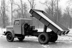 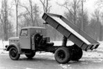 |
| |
| 1970 |
Mit der Lkw-Neuanschaffung Csepel 420 (Kipper) wurde
die Effektivität und Tragfähigkeit erhöht. Im Vordergrund liegt
Immer noch der Transport des Baumaterials für die Wieder- und
Neuaufbau der Stadt.
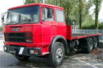 |
| |
| 1975 |
Der Kauf des Lkw's Fiat 697 mit Anhänger bedeutete auch einen Wechsel
bezüglich des Transportschwerpunktes. Der lokale Transport wurde durch den
umfassenden Inlandtransport ersezt. Durch die logistische Unterstützung
für die Industrie wurden neben Baumaterial auch allgemeinen Verbrauchsgüter
befördert.
 |
| |
| 1976 |
Zum Fuhrpark kommt zum ersten Mal ein Kastenwagen
vom Typ Zastava 1300TF dazu. Er dient hauptsächlich als
Service-Fahrzeug der Firma.
 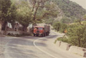 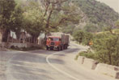 |
| |
| 1980 |
Mit der Anschaffung des Lkw's Fiat 682, der meistens mit einem
Anhänger zum Hafen Ploče und Metković unterwegs war,
wurden die Transportkapazitäten wesentlich gesteigert.
 |
| |
| 1982 |
Mit dem Lkw Fiat 693 und dem neun Meter langen
Dämpfer-Sattelanhänger wurde der Fuhrpark erneut erweitert.
Steinbruch-Produkte waren das Haupttransportgut.
 |
| |
| 1984 |
Mit dem Kauf des leichten Lkw vom Typ Zastava 645AD wurden
hauptsächlich die Transportaufträge für die Lebensmittelindustrie
auf dem ganzen Gebiet des damaligen Staates getätigt.
   |
| |
| 1987 |
Die Anschaffung eines weiteren leichten Lkw's Zastava 640
führte zu Erweiterung des Angebotes um einen Abschleppdienst.
Dieses Fahrzeug würde im Vorfeld eigenhändig von einem Pritsche-
auf ein Abschleppfahrzeug umgebaut.
  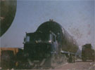 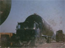  |
| |
| 1988 |
Der Fuhrpark wurde um den MACK F-700 reicher. Mit dem Fahrzeug
wurden die Sondertransporte für das Stahlwerk in Zenica und Ilijaš sowie
für die Auto- und Rüstungsindustrie Famos getätigt.
 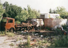 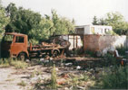   |
| |
| 1992-1995 |
Während des Krieges wurde der gesamte Fuhrpark der Firma entweder
zerstört oder vom Militär konfisziert. Die Familie Martinović floh wegen
der Kriegshandlungen, in unmittelbarer Nähe des Familienhauses und des
Firmensitzes, teils nach Kroatien teils nach Deutschland. Dort sezten sie
die Transporttätigkeit fort bzw. blieb in diesem Umfeld.
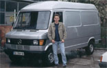 |
| |
| 1996 |
Die Transportgewerbe-Tradition in dritter Generation wird in diesem
Jahr unter dem Namen Sprinter-Sarajevo fortgesetzt. Es wurde der
Mercedes-Benz 307D angeschafft und der Akzent der Firma lag jezt
beim internationalen Transporten mit den Kastenwagen.
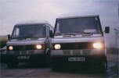  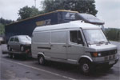 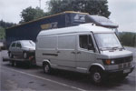 |
| |
| 1998 |
Durch den Kauf des Mercedes-Benz 310D wird das Diensleistungsniveau
erhöht und die Transporte auf Frankreich und auch Spanien ausgeweitet.
  |
| |
| 2002 |
Mercedes-Benz Sprinter 312D wird das zweite Standbein der Firma.
Die Transportkapazitäten erhöhen sich wesentlich mit dem Kauf eines
Anhängers für dieses Fahrzeug, im darauffolgenden Jahr. Damit konnte
man nun Guter bis 3t gewichtes transportieren.
  |
| |
| 2004 |
Ein weiterer Mercedes-Benz Sprinter 312D kommt dazu, diesmal als die
verlängerte Version, die für den Transport von sperriger Ware der
Autoindustrie besser geeignet ist. Diese art Transporte wurden
inzwischen das Hauptaugenmerk der Firma.
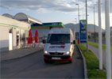  |
| |
| 2006 |
Wegen der großen Nachfrage nach wirksamen Transportsystemen
wird der Fuhrpark nun auf vier Fahrzeuge ausgebaut. Diesmal ist es
ein Mercedes-Benz Sprinter 316CDI.
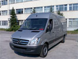 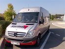 |
| |
| 2007 |
| Zum ersten Mal seit der Gründung der Firma, werden wir stolze
Besitzer eines neuen LKW's der Marke Mercedes-Benz vom
Typ Sprinter 318CDI. Der Fuhrpark wird somit auf fünf Fahrzeuge
vergrößert. Gleizeitig wird darauf geachtet dass im modernste und
umweltfreundlichste Technologie investiert wird. |


.jpg)
.jpg)